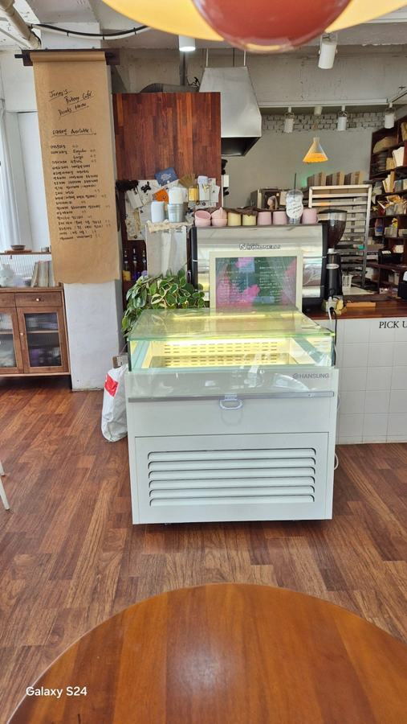
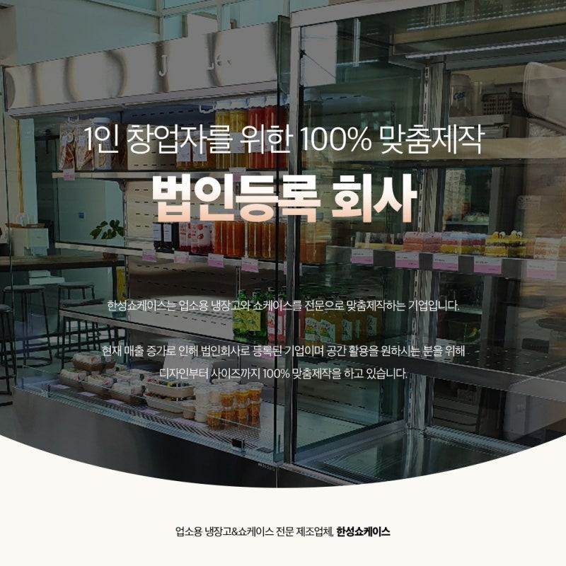
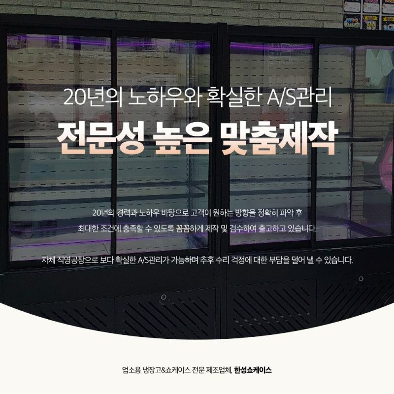
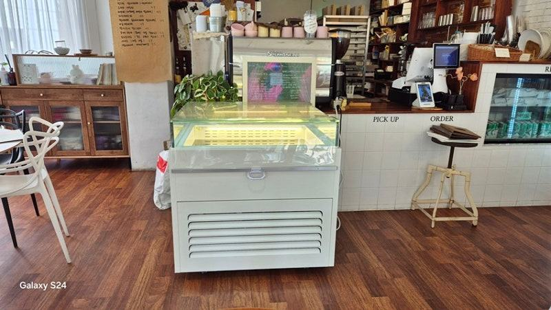
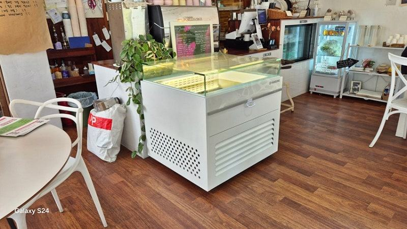
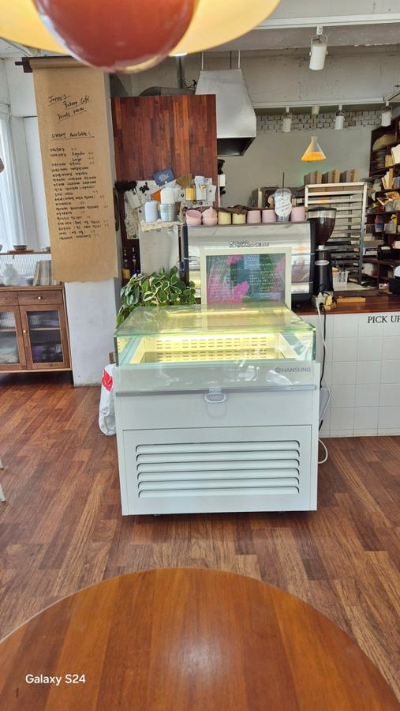
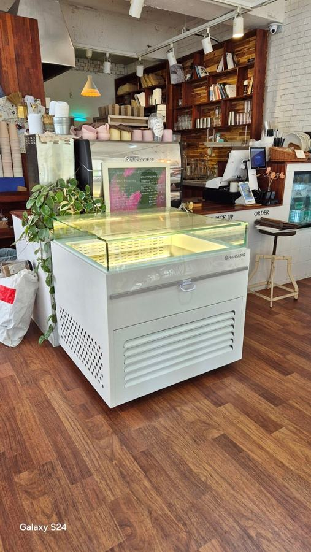
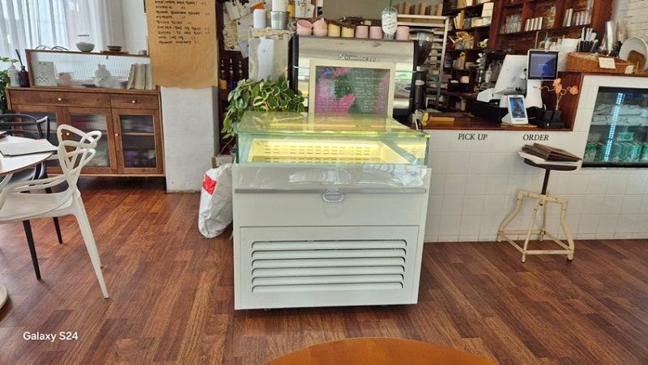

한성제품
편의점 오픈 체크리스트, 냉장 설비부터 점검하세요

편의점 오픈 준비에서는 냉장 쇼케이스 실측과 주문을 인테리어 초기에 끝내고, 전기 용량·배수·반입 경로를 미리 확인한 뒤, 상품 입고 전 시운전으로 온도가 안정되는지 보는 순서가 안전합니다. 마지막으로 고장 시 연락할 A/S 창구를 매장에 적어 두면 오픈 첫 주를 큰 문제 없이 넘길 수 있습니다.
안녕하세요. 편의점과 동네 마트의 냉장·냉동 진열장을 맞춤으로 만드는 한성쇼케이스입니다.
편의점 오픈을 앞두면 인테리어, 상품 발주, 포스 설치, 직원 채용까지 할 일이 한꺼번에 몰립니다. 그중에서도 냉장 설비는 제작과 설치에 시간이 걸리고, 한 번 자리 잡으면 옮기기 어려워 순서를 놓치면 오픈 일정 전체가 밀립니다.
실제로 쇼케이스 반입이 늦어져 상품을 먼저 받아 놓고 보관할 곳이 없어 곤란해지거나, 전기 용량이 부족해 차단기가 내려가는 일이 오픈 첫날 생기기도 합니다.
오늘은 편의점 오픈 전에 냉장 설비를 중심으로 단계별로 확인할 체크리스트를 정리해 드리겠습니다.
1. 인테리어 초기: 실측과 배치 확정
냉장 쇼케이스는 인테리어 공사가 시작될 때 이미 위치와 크기가 정해져 있어야 합니다. 벽 폭, 기둥 위치, 천장 높이를 실측하고 음료, 유제품, 간편식, 냉동식품 구역을 도면에 표시해 두세요.
작은 매장일수록 기성 규격이 벽 폭과 맞지 않아 애매하게 남는 공간이 생깁니다. 이 단계에서 맞춤 제작 여부를 정해야 제작 기간을 오픈 일정 안에 맞출 수 있습니다.
- 냉장 구역 벽 폭과 기둥 위치를 실측하세요.
- 상품군별 냉장·냉동 구역을 도면에 표시하세요.
- 제작 기간을 오픈일에서 역산해 주문하세요.
2. 공사 중: 전기, 배수, 반입 경로
냉장 쇼케이스는 여러 대가 동시에 돌아가기 때문에 전기 용량이 부족하면 차단기가 자주 내려갑니다. 전기 공사 때 냉장 설비용 전용 회로와 콘센트 위치를 따로 잡아 두세요.
배수가 필요한 제품이라면 배수구 위치를, 기계실 열이 나가는 방향도 함께 정해야 합니다. 출입문 폭과 반입 경로도 미리 재 두셔야 설치 당일 문틀에 걸리는 일을 막을 수 있습니다.
- 냉장 설비 전용 회로를 잡아 두세요.
- 배수구와 배기 방향을 정하세요.
- 출입문 폭과 반입 경로를 확인하세요.


3. 설치 후: 상품 입고 전 시운전
쇼케이스를 설치하자마자 상품을 채우지 마시고, 먼저 빈 상태로 전원을 넣어 설정 온도까지 안정적으로 내려가는지 확인하세요.
칸마다 조명이 켜지는지, 문이 끝까지 닫히는지, 이상한 소리는 없는지도 함께 봅니다.
시운전에서 문제가 보이면 오픈 전에 바로잡을 수 있습니다. 상품을 가득 채운 뒤에 문제가 발견되면 상품을 옮기느라 오픈 준비가 꼬이게 됩니다.
이때 냉동 쇼케이스와 냉장 쇼케이스를 동시에 켜서 차단기가 버티는지도 함께 확인해 두세요. 오픈 당일 포스와 조명까지 한꺼번에 켜졌을 때 전기가 부족하면 곤란해집니다.
4. 오픈 직전: 관리 습관과 A/S 창구
직원들과 함께 상품 보충 방법, 선입선출 진열, 마감 때 확인할 것을 정해 두세요. 응축기 앞에 박스를 쌓지 않기, 문 패킹 닦기처럼 간단한 습관이 고장을 줄입니다.
고장은 영업이 바쁜 날 찾아오는 경우가 많습니다. 제품 명판 사진과 A/S 접수 연락처를 카운터 근처에 붙여 두면 사장님이 자리에 없을 때도 직원이 바로 접수할 수 있습니다.
- 선입선출 진열 방법을 직원과 공유하세요.
- 명판 사진과 A/S 연락처를 카운터에 붙여 두세요.
체크리스트
- 냉장 구역 실측과 도면 표시
- 제작 기간 역산 후 주문
- 냉장 설비 전용 전기 회로
- 배수·배기·반입 경로 확인
- 상품 입고 전 빈 상태 시운전
- A/S 연락처 매장 비치
현장에서 자주 보는 경우: 기성품을 먼저 보다가 맞춤으로 돌아서실 때
편의점 오픈쇼케이스를 알아보시는 사장님들은 대부분 기성품부터 보십니다. 그런데 기성품은 형식적인 사이즈와 디자인에 맞춰져 있어, 매장의 세세한 조건을 살리지 못해 마음에 드는 제품을 찾기 어렵다고 하시는 경우가 많습니다.
시간이 지난 뒤 A/S를 제대로 받지 못해 속상해하시는 분도 계십니다.
그래서 저희는 고객님의 조건을 꼼꼼하게 파악해 외형과 기능을 맞춤 제작하고, 사용 중 생기는 문제까지 사후관리로 도와드립니다.
직접 제조하기 때문에 유통 마진 부담도 줄일 수 있어 오픈 비용을 계획하실 때 도움이 됩니다.





자주 묻는 질문
편의점 냉장 쇼케이스는 언제 주문해야 하나요?
인테리어 공사를 시작할 때 실측과 배치를 확정하고 주문하시는 것이 좋습니다. 맞춤 제작이라면 제작 기간을 오픈일에서 역산해 여유 있게 잡으세요.
시운전은 얼마나 해 보면 되나요?
빈 상태로 설정 온도까지 안정적으로 내려가고 유지되는지 확인될 때까지 지켜보시면 됩니다. 칸별 조명, 문 닫힘, 소음도 함께 확인해 주세요.
오픈 직후 고장이 나면 어떻게 하나요?
한성쇼케이스는 전국 240여 개 A/S 센터로 대응합니다. 대표전화 031-986-2458로 증상과 명판 사진을 보내 주시면 접수가 빨라집니다.
매장 조건에 맞춰 만드는 한성쇼케이스
원하시는 제품 사진과 설치할 공간 사진만 보내 주셔도 매장에 맞는 구성을 추천해 드립니다.
- 전국 240여 개 A/S 전담 센터 운영
- 본사 대량 자재 매입으로 품질 대비 합리적인 가격
- 유럽제·삼성 냉각 콤프레셔 적용
- 국내 최초 쇼케이스 전문 디자이너 상주
매장 폭과 원하는 진열 구성을 알려 주세요. 실측과 견적을 안내해 드립니다.
031-986-2458